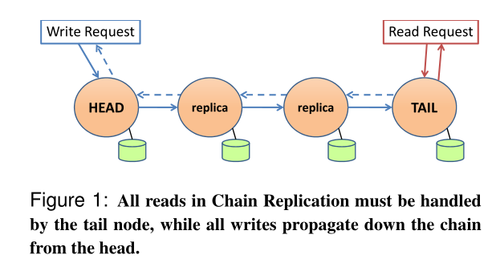
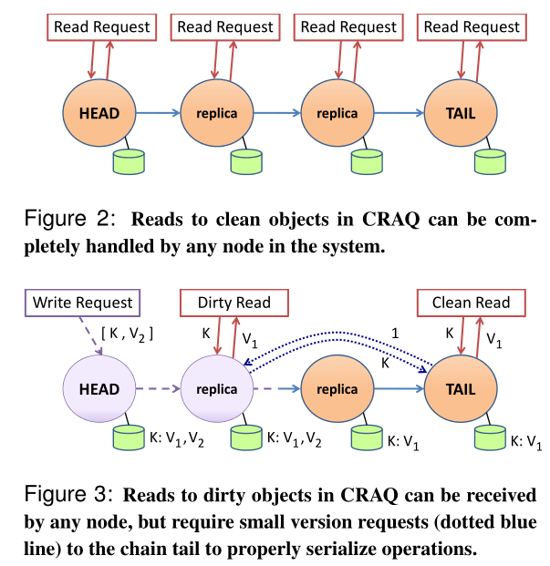

6.824 的第五篇论文是 CRAQ(Chain Replication with Apportioned Queries)——一种以读取为主的工作负载的高吞吐量链式复制。它对原先的 Chain Replication 进行了一定的改进，在保持强一致性的同时大大提高了读取吞吐量。通过在所有对象副本之间分配负载，CRAQ 随链大小线性扩展，而不会增加一致性协调。
Chain Replication
在传统的 CR 策略中，所有服务器按照链排列，第一个服务器称为 HEAD，最后一个服务器称为 TAIL。HEAD 处理所有写请求，TAIL 处理所有读请求。写请求沿链传播，TAIL 收到后会返回 ack。

CR 本身是线性一致的，在没有故障时，从一致性的角度来说，整个系统就像只有 TAIL 一台服务器一样，TAIL 可以看到所有的写请求，也可以看到所有的读请求，它一次只处理一个请求，读请求可以看到最新写入的数据。
与 Raft 相比
- Raft 的 Leader 在处理写请求时，会将该请求广播给其他所有 raft node，而 CR 的 HEAD 只会将请求发送给链中的下一个服务器。同等条件下，CR 的网络负担更小，单位时间内也能处理更多请求。
- 对于读请求，Raft 中也是只有 Leader 一人承担，而 CR 中则由 TAIL 处理，相当于 CR 的 HEAD 和 TAIL 各自分担了读写负载。
- CR 的故障恢复相对而言更简单：
- 如果 HEAD 崩溃了，则由下一个服务器成为 HEAD。没发出去的请求就不管了，发出去的请求照样沿链传播。
- 如果 TAIL 崩溃了，其前一个服务器成为 TAIL。这是很自然的，因为前一个服务器知道的信息必然不少于挂掉的 TAIL。
- 如果中间的服务器崩溃了，则需要将其移除，就像在链表中移除一样，并且可能需要有消息的重发。
缺陷
- 所有的读请求都会被发到 TAIL，从而导致潜在的 hotspot 以及负载不平衡，且并不能通过增加节点数量来提高读吞吐量。
- 存在脑裂(split-brain 问题。
第二个问题很好解决，可以通过设置一个 Configuration Manager 来安排 chain 的配置。该配置中描述了链的定义，包括所有节点，HEAD 和 TAIL。Configuration Manager 监测节点活性，一旦有节点挂了，则会重新生成并发送新的配置。它不能否认自己，从而解决脑裂问题。
CRAQ
一致性模型
- 强一致性：对对象的所有读写操作都以某种顺序执行，且对对象的读取总是看到最新的写入值。
- 最终一致性：虽然对不同节点的读取可能会在一段时间内返回旧数据，但一旦所有副本都收到写请求，则读操作永远不会返回比最新提交的写入更旧的版本。
- 具有最大有界不一致性：允许读操作在提交之前返回新写入的对象，但仅限于某个点。
改进
CRAQ 对传统 CR 的改进之处在以下几点：
- 节点存放对象的多个版本，每个版本都包含一个单调增的版本号和该版本是否 dirty 的附加属性；
- 当节点收到对象新版本的写入时，节点会将这个版本附加到其对象列表中，并且：
- 若该节点不是 TAIL，将此版本标记为
dirty = true； - 反之，将此版本标记为
dirty = false，此时将对象的版本称为 committed，然后向前发送 ack 通知其它节点。与此同时，该节点也可以在本地处理读取操作。
- 若该节点不是 TAIL，将此版本标记为
- 当返回的 ack 到达节点时，节点将该版本标记为
dirty = false，然后可以删除该对象的所有先前版本。 - 当一个节点收到对象的读请求时：
- 若最新版本号并不 dirty，则返回；
- 反之，联系 TAIL 并查询该对象最后提交的版本号并返回。

在这样的策略下，无论写请求是否到该节点，以及 ack 是否传回该节点，对对象的读操作也能表现地像 CR 那样——因为读请求总是 serialized with respect to the TAIL.
也可以隐式确定对象的
dirty属性，即对象列表中不止一个版本，则必然是脏的，反之同理。前提是收到 ack 后立即删除旧版本。
CRAQ 对 CR 的吞吐量改进体现在以下两个场景：
- Read-Mostly Workloads：大部分读请求由 \(C-1\) 个非 TAIL 节点处理，故这些场景中的吞吐量与链长 \(C\) 呈线性关系。
- Write-Heavy Workloads：对非 TAIL 节点的大多数读请求都是脏的，因此需要对 TAIL 进行版本查询，而这种查询比读取完整的数据对象更加轻量，故总吞吐量仍然高于 CR。
CRAQ 布局
链布局策略
使用分布式存储服务的应用程序的需求可能多种多样，可能有以下常见情况：
- 对对象的大部分或全部写入可能源自单个数据中心。
- 某些对象可能只与数据中心的子集相关。
- 热对象可能需要大量复制，而冷对象可能很少。
CRAQ 通过使用对象的两级命名层次结构来满足这些要求，对象标识符由链标识符和键标识符组成。
隐式数据中心 & 全局链长
\(\{num\_datacenters,\ chain\_size\}\)
这种方法中仅定义了数据中心是数量，并未实际指明。为确定哪些数据中心存储了链，还需要用到一致性哈希。
显式数据中心 & 全局链长
\(\{chain\_size,\ dc_1,\ dc_2,\ \dots, dc_N\}\)
每个数据中心都使用相同链长，链头位于 \(dc_1\) 内，链尾位于 \(dc_N\) 内，并且根据提供的数据中心列表对链排序。若 chain_size = 0，说明链应该使用数据中心内的所有节点。
显式数据中心链长
\(\{dc_1,\ chain\_size_1,\ \dots, dc_N,\ chain\_size_N\}\)
每个数据中心的链长单独指定，允许链负载不均衡。chain_size i 也可以设为 0。
数据中心内的 CRAQ
目前，CRAQ 使用一致性哈希将链放在数据中心内，将尽可能多的链标识符映射到单个 HEAD。
跨数据中心的 CRAQ
当链跨域时，CRAQ 从任何节点读的特性能够降低其延迟——client 可以就近读取，而无需发送跨域网络请求。
尽管随着数据中心数量的增加，写延迟也会增加，但 CRAQ 允许写入沿链流水线化，故与 primary/backup 方法相比，还是能够极大提高写入吞吐量。应用程序可能进一步优化链的选择，从而最大限度减少写入延迟和网络成本。
ZooKeeper 协调服务
目前的 CRAQ 利用 ZooKeeper 来跟踪组成员身份与存储链数据。通过 ZooKeeper，可以保证 CRAQ 节点在有节点加入/退出链，或某些数据发生变化时收到通知。
总结
CRAQ 通过串行的方法提供了另一种有趣的复制方式，且提供了与 Raft 不一样的属性，它也给 Aurora 提供了一定的策略支持。